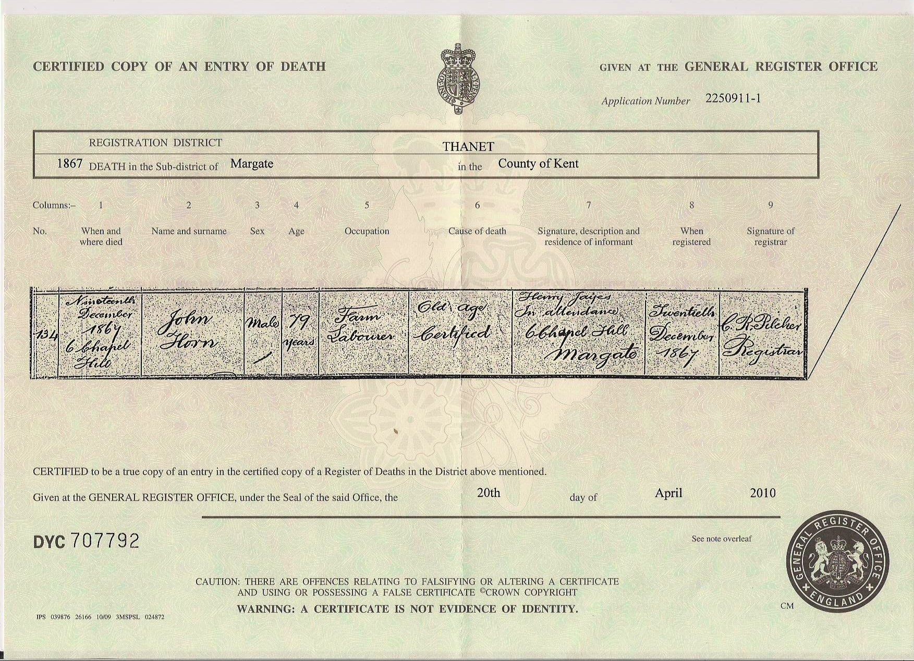
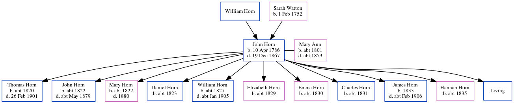

John Horn 1786 - 1867
[ Home ] | [ Calendar ] | [ Surnames Index ] | [ Errors ] | [ Family History ]A labourer and the youngest of 4 children of William Horn and Sarah Watton, John Horn, the 3 times great-grandfather of Nigel Horne, was born in Margate, Kent, England on 10 Apr 17861,2,3,4, was baptised there at St John the Baptist's Church on 30 Apr 1786 and had 11 children with Mary Ann: Thomas, John, Mary Ann, Daniel, William, Elizabeth Emma, Emma, Charles, James, Hannah and George, along with 1 surviving child.
During his life, he was living at Chapel Hill in Margate on 6 Jun 18418 and at 6 Chapel Hill in Margate on 30 Mar 18517.
He died on 19 Dec 1867 in Margate2,4,5 (old age) and was buried there at St John the Baptist's Church on 26 Dec 18674,6.
Parents
- Sarah was born on 1 Feb 1752
Children
- Thomas was born c. 1820
- John was born c. 1822
- Mary Ann was born c. 1822
- Daniel was born c. 1823
- William was born c. 1827
- Elizabeth Emma was born c. 1829
- Emma was born c. 1830
- Charles was born c. 1831
- James was born in 1833
- Hannah was born c. 1835
Citations
- 1851 England Census Online publication - Provo, UT, USA: The Generations Network, Inc., 2005.Original data - Census Returns of England and Wales, 1851. Kew, Surrey, England: The National Archives of the UK (TNA): Public Record Office (PRO), 1851. Data imaged from the National
- England & Wales, FreeBMD Death Index: 1837-1915 Online publication - Provo, UT, USA: The Generations Network, Inc., 2006.Original data - General Register Office. England and Wales Civil Registration Indexes. London, England: General Register Office. © Crown copyright. Published by permission of the Cont
- Kent, Canterbury Archdeaconry Baptisms - Findmypast
- Kent, Canterbury Archdeaconry Burials - Findmypast
- England & Wales deaths 1837-2007 - Findmypast
- Familysearch.org (www.familysearch.org)
- 1851 England, Wales & Scotland Census - Findmypast (was age 60 and the head of the household)
- 1841 England, Wales & Scotland Census - Findmypast (was age 45 and the head of the household)
Notes
This is NOT the John Horn who married Mary Ann Jarrett on 10/10/1819. That Mary Ann was alive and living with John Horn in 1851, whereas this John Horn is alone with his mother in a poor house in 1851.
Media
John Horn - death certificate

Canterbury Baptisms Transcription - GBPRS-CANT-B-96208897
Kent, Canterbury Archdeaconry burials - GBPRS/CANT/D/95009698
England & Wales deaths 1837-2007 - BMD/D/1867/4/AZ/000154/162
1851 England, Wales & Scotland Census - GBC/1851/0005885654
England Births & Baptisms 1538-1975 - R_883173848
Family Tree
Map
Generated by ged2site. Last updated on Jul 3, 2024